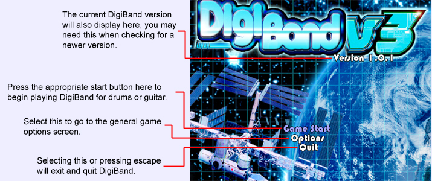
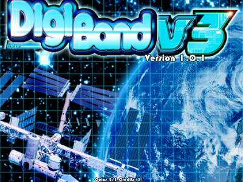
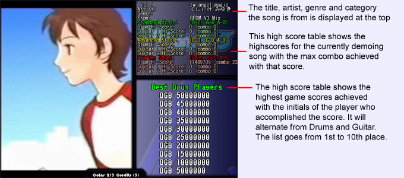

|  |
|
Here you will choose to start the game, select the options, or quit. Navigate with the arrow keys up down left and right. Remember, you must press the appropriate start button while "Game Start" is highlighted to begin play. Pressing 1 to activate guitar 1, 7 for guitar 2, and enter/return for drums. |
|  |
|
This is the title screen while "arcade mode" is activated. Here you must press the appropriate key for the option you wish to do. This is because arcade mode is design to be in an enclosed case with special arcade owner keys that are usually behind a locked panel. By default, scroll lock inserts coins, enter is drum start, 1 is guitar 1 start, 7 is guitar 2 start, pause/break enters the options screen and escape quits. In our cabinent design, escape will force a quit and reload of our software only. |
|  |
|
In arcade mode, if the title screen idles for a period of time, it will move on to it's attract sequences. This on in specific displays a song, and details about that song. The music plays as if it were played accurately in game, and the video is played. As the song plays the overall game highscores appear on the right. By this point you are probably thinking, why does the title screen say DigiBand V3? V3 does not mean Version 3, it means V as in Drummania and Guitarfreaks V (Copyright Konami). V standing for "Vest" which was a mistranslation as they meant "Best". The katakana character bu is commonly used in japanese for both vu and bu, as there is no "v" base constanants in the japenase language. The japanese generally pernounce V and B's the same. DigiBand uses a default theme that is a parody of the theme used by GF/DM V3. The other theme "Japanesque" installed with DigiBand just plainly reads "DigiBand" without the V3 added to it. |